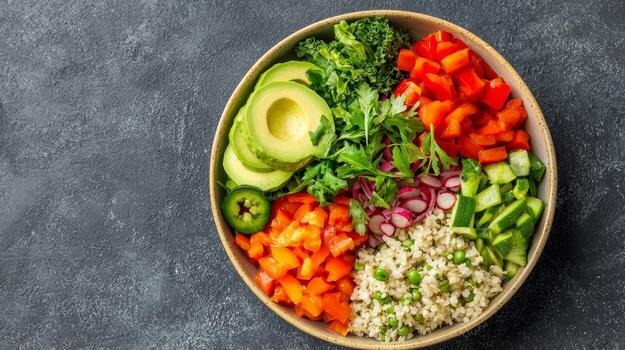
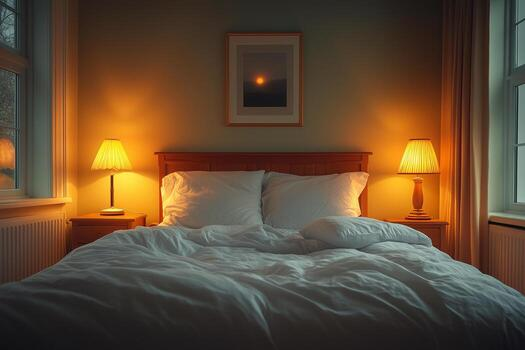

Adopting a healthy lifestyle is about making sustainable choices every day. It involves balanced nutrition, regular movement, and adequate rest.
Nutrition is the foundation of health. Focus on eating a variety of whole foods, including fruits, vegetables, lean proteins, and whole grains.
Physical activity strengthens the heart, improves mood, and increases longevity.

| Day | Activity | Duration |
|---|---|---|
| Monday | Walking | 30 mins |
| Wednesday | Bodyweight Strength | 20 mins |
| Friday | Cycling or Swimming | 30 mins |
Sleep is when your body repairs itself. Most adults require 7 to 9 hours of quality sleep per night.
